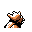

#021
Spearow
Normal
Eats bugs in grassy areas. It has to flap its short wings at high speed to stay airborne
Base stats Total 231
HP40
Attack60
Defense30
Speed70
Special31
Details
- Species
- Tiny Bird
- Height
- 1'00"
- Weight
- 4.0 lb
- Catch rate
- 255
- Base exp
- 58
- Growth
- Medium Fast
Level-up moves
LevelMoveType
StartPeck
StartGrowlNormal
Lv 6LeerNormal
Lv 10Fury AttackNormal
Lv 22Focus EnergyNormal
Lv 23Wing Attack
Lv 25HeadbuttNormal
Lv 30Drill Peck
Lv 34Body SlamNormal
Lv 44Double-EdgeNormal
Lv 46Sky Attack
TM / HM
TM02 Razor WindTM06 ToxicTM09 Take DownTM10 Double-EdgeTM31 MimicTM32 Double TeamTM34 BideTM39 SwiftTM43 Sky AttackTM44 RestTM49 Tri AttackTM50 SubstituteHM02 Fly